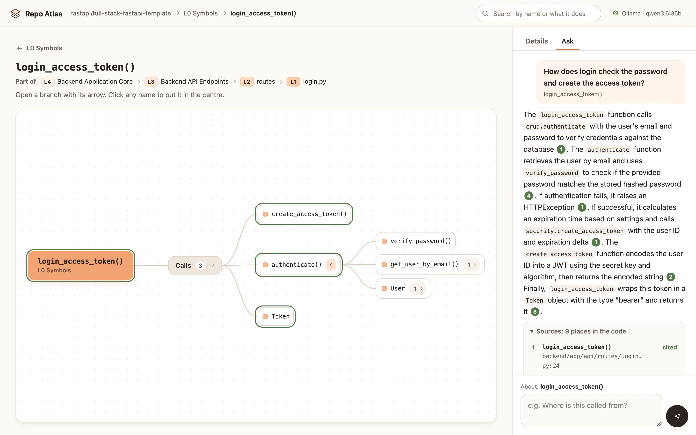

A map of any GitHub repo, on your machine
Read a repository once, then open it branch by branch, from whole areas down to single functions. Ask anything and get the code it came from.
npx @cpldxx/repo-atlas
Free to run. Needs Node 18+ and git.
Five layers, repo to function
Pick a layer and it opens flat, callers on the left and what they call on the right. The bottom three come straight from the code. The top two are grouped from the folders and named by the model you choose.
Ask, and get the code it came from
Questions go to the part of the map you're looking at. The answer numbers every source, and the parts it used light up on the map. With no model connected, you still get the code locations.


Runs on your machine
- No account. One command starts it on your computer. Maps and settings live in
~/.repo-atlas. - Your model. With Ollama, everything stays on your computer. With Claude, your question and the code it reads go to Anthropic under your own API key.
- Built on Graphify. The code is parsed into a knowledge graph on your computer before any model sees it.